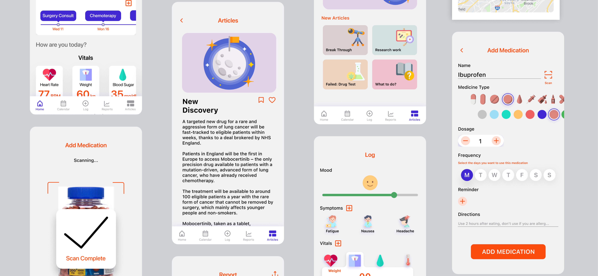

CANCER CARE
Health management solution for Cancer

TIMELINE
2 months
TOOLS
Pen and Paper, Figma, Optimal Sort, Maze
MY ROLE
User research, Visual Design, Information Architecture, Interaction Design, Prototyping, Testing
PROBLEM
Newly diagnosed patients become overwhelmed trying to keep track of complex information and processes.
These complex treatment process can be difficult to maintain and could lead to problems like inconsistent drug use, missing appointments or not being able to give proper information about symptoms severity to their doctors leading to misdiagnosis. This led to the question - How can people be equipped with a tool that would help them manage their health better?
THE SOLUTION
Making health management easy
Medications, Appointments & Vitals at a glance
- Track and manage daily medication, upcoming appointments, and tracked vitals at a glance.
- Can view and log medications to be used through the day.
- Users can log their body vitals.
Simple dashboard
- Users can add medications and upcoming appointments
Read Articles
- Users can get credible information, read and save artcles.
Share Reports
- Users can view and compare weekly or monthly reports of their tracked vitals and symptoms.
- Ability to share reports with their doctor or cregiver.
THE APPROACH

COMPETITIVE ANALYSIS
Analyzing the problem space and current solutions
I analyzed 3 applications around health management, brreaking down and analyzing the directions they’ve taken, to identify what worked, and things that didn’t. Taking the successes from this application as well as some Donald Norman’s principles i.e Visibility, Affordance, and Consistency, I was able define the principle that would guide our design approach.

USER INTERVIEWS
“...its ability to provide information, which would not be available otherwise.”
I conducted 5 user interviews, to find trends on why and how they use health anagement apps. The data was analyzed into an affinity map to help build personas, scenarios, journey map, and further inform the design decision.
RESEARCH QUESTIONS:
- What digital solution to manage your health?
- What motivated you to use one of these solutions?
- Can you describe your experience with using these solutions?
- Walk me through the process of using these applications?
- What are the most important features for you?
- What difficlties do you experience using these applications?

MAIN INSIGHTS
“...mHealth applications can improve aspects of symptom control in patients with cancer”*
*Osborn, J., Ajakaiye, A., Cooksley, T. et al. Do mHealth applications improve clinical outcomes of patients with cancer? A critical appraisal of the peer-reviewed literature. Support Care Cancer 28, 1469–1479 (2020). https://doi.org/10.1007/s00520-019-04945-4
Based on the trends from the affinity map and grouping similar notes, I recognized that users were generally interested in a convenient, efficient and automated way to manage and report multiple aspects of their health.
THEME 1: Reminders
- Reminders take away the need to have to constantly check the time.
- Convinience of push notifications are great.
THEME 2: Information
- People value personalized and tailored information
- Ability to also share information on health directly with doctors was important.
THEME 3: Tracking
- Can track daily activity and view at a glance.
- Can review progress with tracked data.
- Goal setting in combination with tracking will help improve discipline.
PERSONAS + EMPATHY MAPS
Based on the insights and observations from the research, I created 3 personas that captured the users, their goals and motivation. I also formed empathy maps to understand their needs and frustrations.

INFORMATION ARCHITECTURE & JOURNEY MAP
I organized an online Card sort session with 6 participants to observe patterns and language they used, to determine the best way to organize and categorize the features. Also, using the personas and empathy maps, I made the journey map highlighting the pain points and the oppurtunities for improvement.

DESIGN
I did some initial sketches to do some quick investigations and get feedback early on
Using the research findings, I explored 2 design ideas to find the best approach to the solution. I started with some initial sketches to do some quick investigation of what would work.

I conducted an heuristic evaluation and peer review sessions with 2 professors of HCI and 4 HCI Master’s students to test the two ideas. I moved forward with the second idea.

VISUAL DESIGN

The design style was focused on communicating a friendly, mordern and legible tone as CancerCare will be used by users of all ages. The friendly design allows users feel connected to the product which would makes it easier for them to keep using the product to enhance their every day lives. The vibrant illustrations combined with texts on the cards helps older users alongside people with visual impairments or non-native english speakers understand what each element does.
TESTING + ITERATIONS
3 improvements to the design
I conducted user tests with 10 participants, using a combination of the Think-aloud protocol and the Remote usability testing methods. The key things to be evaluated were the Usability, Findability, Learnability of the application. The participants were asked to perform these tasks: Add Medication, Record body vitals, Record mood and symptoms, Read an article, Add appointment.
I conducted the test sessions using Maze which automated the collection of task completion times, user’s paths, heat maps, misclick rates so a combination of these and the SUS form participants completed at the end of the session formed the quantitative data.


Simplified visuals
- I explored some other ideas of how to better visualize the medication and appointments sections for easier understanding.
Providing “Shortcuts”
- Added the ability to add medications and appointments straight from the homepage, this would help to reduce number of clicks, and increase findability.
More information
- Added details on dosage and time to use drugs when you tap on a medication to log on the homepage.
- Action buttons added to call doctor or open up the address on the map to the appointment popup.
- Full details off medication pops up when a drug is tapped on so you can quickly look through it and go back without going to a different page.


Larger icons and texts
- Increased the size of texts and icons on cards for better legibility.
FINAL SCREENS
The solution

CONCLUSION + REFLECTIONS
What I’ve learnt on this project
This was my first master’s project, and it was a great learning experience as this was the first time I worked end to end on a design project from problem definition, research, prototyping, visual design and finally front-end development. Some of the things I learnt:
- Continuous feedback: Being able to work with colleageus on my course to get peer review as well as feedback from my module leads every step of the way was very helpful in getting mistakes detected early on, making corrections and getting to the final solution.
- Creating sketches, wireframes, and paper prototype, helped to properly visualize as well as get feedback early on; this helped me save a lot of time and resources in the long run.
- With more time, I would have worked on more design assets like: an Onboarding screen, A walk through guide for new users. Also add features like: Chat function with doctors, Ability to add a caregiver to monitor patient’s activities.
- Another step would be to test with more users and gather more feedback based on actual use in day to day environments, and re-iterate the product to suit the needs of the users. A constant re-iteration process and and development would be implemented.